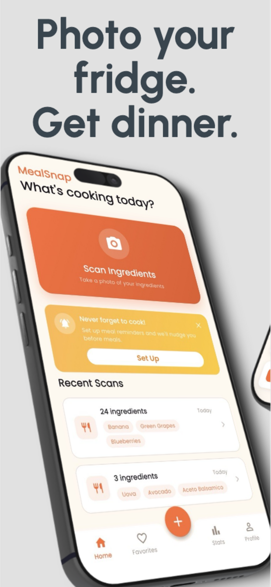
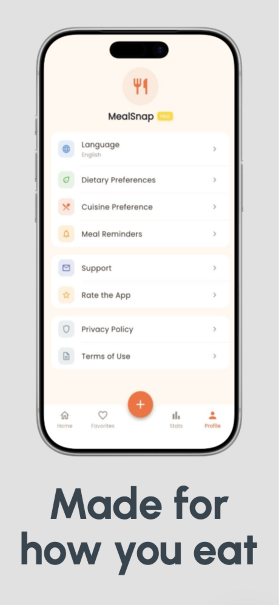
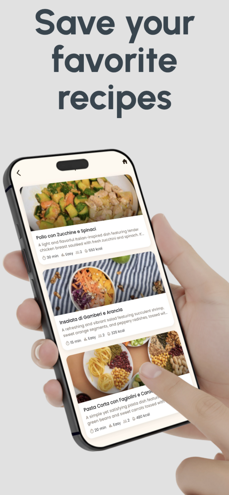
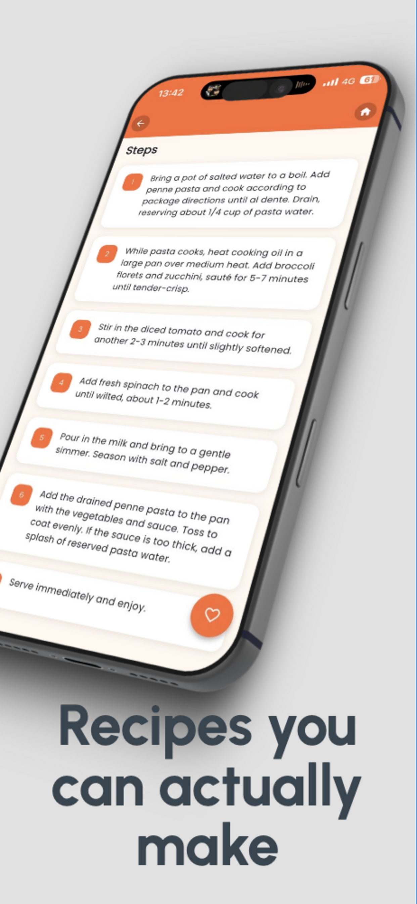
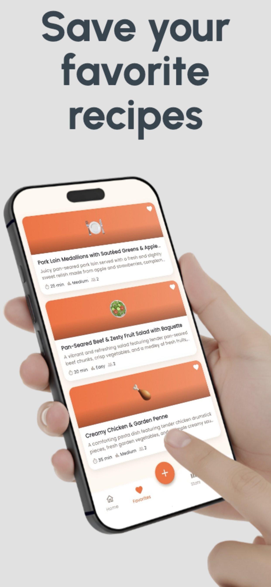

Snap & Detect
Take a photo of your ingredients. Our AI identifies them in seconds, no typing required.
Three taps from the photo on your counter to dinner on the table.
Take a photo of your ingredients. Our AI identifies them in seconds, no typing required.
Get three personalized recipes that use what you already have, with full step-by-step instructions.
Loved a recipe? Save it and access it anytime, even offline.
Built around the way you actually cook — and the way you actually eat.
Vegetarian, vegan, gluten-free, keto, dairy-free, low-carb. We've got every diet covered.
Missing an ingredient? Export a shopping list with one tap.
Craving Italian, Asian, Mexican? Tell us your mood and we'll match recipes to it.
From snap to plate, in five quick steps.





Real people, real fridges, real dinners.
"I used to stare at my fridge for 20 minutes every night. Now I snap a photo, pick a recipe, and dinner is done. Saved $40 on takeout this week."
"I'm broke and lazy and this app is basically my personal chef. Photo of the sad veggies in my fridge → actual dinner. Magic."
"Between work and the gym I have zero brain left for meal planning. Frix decides for me in 10 seconds and the recipes actually slap."
"Three picky kids, one tired dad. I scan whatever's left in the fridge and Frix finds something everyone will actually eat. Lifesaver."
"The vegetarian filter is perfect — no more 'just remove the chicken' suggestions. Discovered five new recipes in my first week."
"I prep on Sundays. I scan everything I bought, get a week of recipes, export the shopping list. Frix replaced three different apps for me."
Everything you might want to know before you scan.
Yes. Your photos are processed securely and are never shared, sold, or used to train external models. We only keep the structured ingredient list and your saved recipes — and you can delete them at any time from inside the app.
Very accurate for clearly visible items in good light. We use Claude Vision, which handles fresh produce, packaged goods, and pantry staples. You can always tweak the list — add what was hiding, remove anything you don't want to use.
No. The free plan includes 5 scans per day, 3 recipes per scan, and up to 10 saved favorites — enough for most weeknight cooks. Premium unlocks the extras when you want more flexibility.
Premium ($4.99/month) includes unlimited scans, dietary filters (vegetarian, vegan, gluten-free, dairy-free, keto, low-carb), unlimited saved favorites, one-tap shopping list export, and cuisine preferences like Italian, Asian, and Mexican.
Scanning ingredients and generating new recipes needs an internet connection because the AI runs in the cloud. But your saved favorites are cached on your device, so you can pull up any recipe you've saved even when you're offline.
Frix is available on iPhone running iOS 15 or later. Android is not supported at this time.